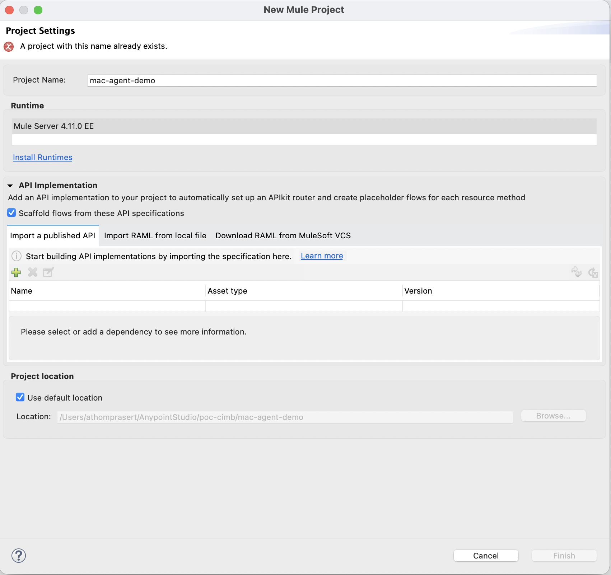
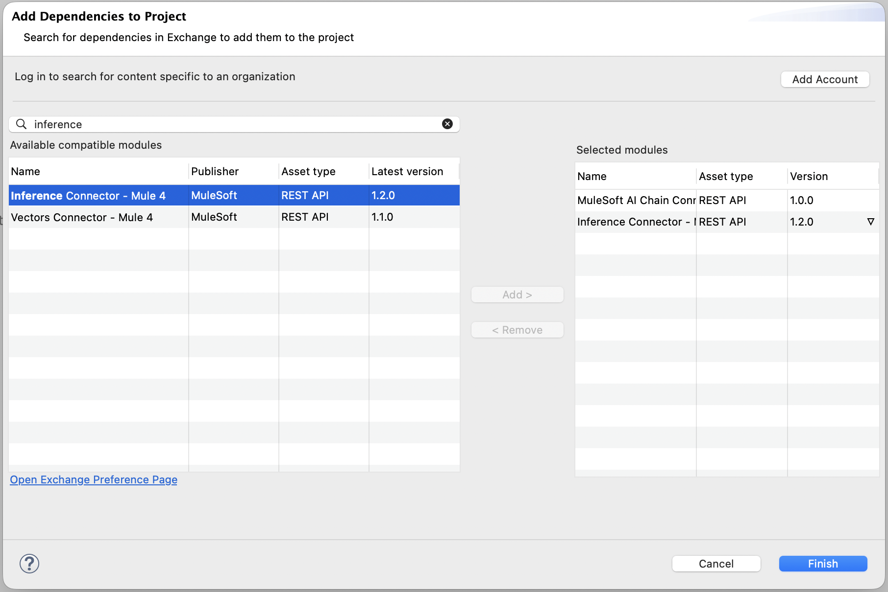
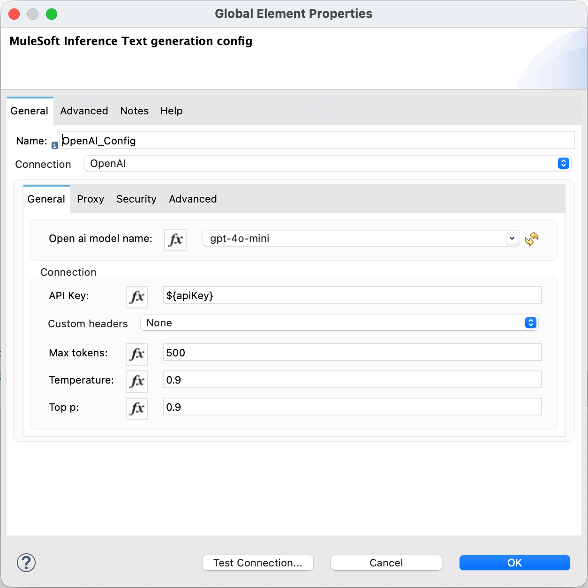
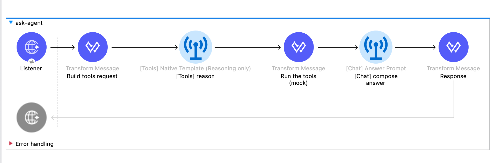
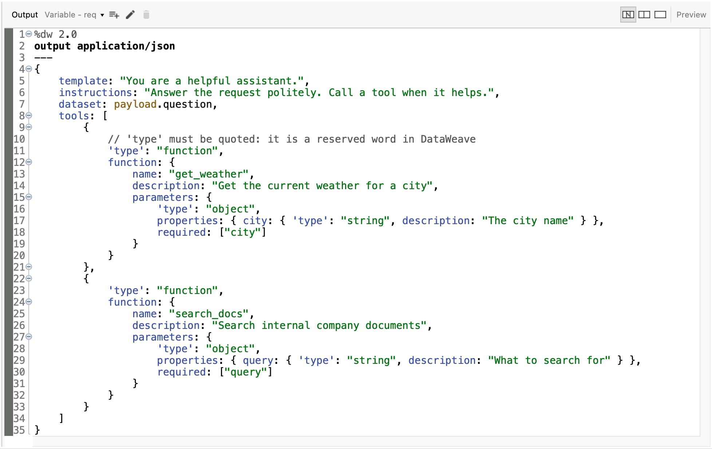
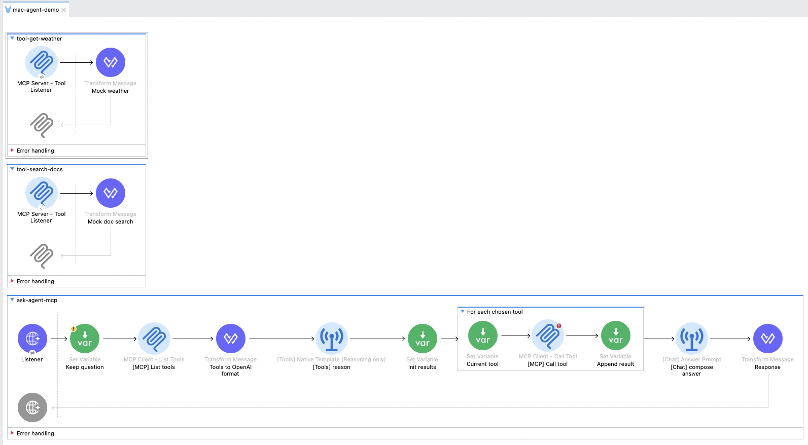
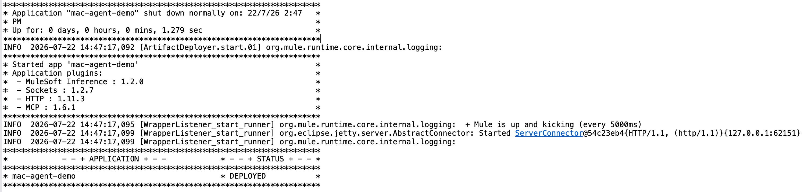
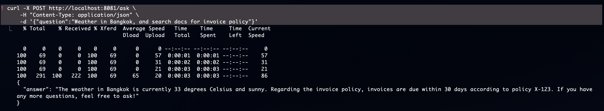
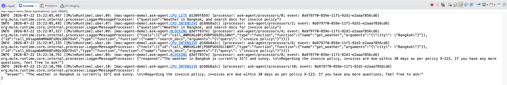

Lesson 44 · Anypoint Studio · MuleSoft Inference connector
Same tool-using agent as L18/L20/L26/L32/L38 — but built as a Mule flow in Anypoint Studio using a single connector: MuleSoft Inference. Studio-first walkthrough with 9 screenshot slots for you to capture.
com.mulesoft.connectors:mule4-inference-connector, XML namespace ms-inference) but verify the exact operation names on Anypoint Exchange before you drop them into your flow. Screenshots you capture will be authoritative for the version you have installed.
gpt-4o-mini (the Inference connector also supports Anthropic, Azure OpenAI, Ollama, Groq, and more)To keep this comparable to your Python lessons, we're building the same little agent from L18, L20, L26, L32, and L38:
The same agent shape you built five times in Python — this time as a Mule flow that Anypoint runs, monitors, and can deploy to CloudHub or Runtime Fabric.
[Tools] Native Template (Reasoning only). That name matters. Unlike a fully-managed agent that runs the whole loop for you, this operation does one thing: it sends your prompt plus the tool definitions to the LLM and returns which tool the model wants to call, with what arguments. You then wire the actual call (an HTTP Request to the weather API, a database lookup, etc.) in the Mule flow and feed the result back. More explicit, more flow-building — but you see every step, which is exactly the tool-execution the Python frameworks hid from you in L20–L43.
mac-agent-demo. Click Finish.mule4-inference-connector).
mac-agent-demo typed as the project name — before clicking Finish. Save as lessons/img/l44/01-new-mule-project.png.
lessons/img/l44/02-mac-connector-search.png.OpenAIChatCompletionClient(...) object in L38 — one config, many operation calls. For the Inference connector this block is called a Text Generation config, and inside it you pick a connection (OpenAI, Anthropic, Ollama, …).
gpt-4o-mini${config.apiKey} — reference a property, don't paste the raw key60000 (ms)src/main/resources/config.yaml with the key (apiKey: sk-...). Add Configuration Properties in the Global Elements pointing at it.
lessons/img/l44/03-llm-config.png.${property.name} and put the actual value in config.yaml which is .gitignored. Same rule as L06 System & environment.
Now assemble the flow — HTTP entry, the LLM tool-reasoning call, your tool execution, then a second LLM call to compose the answer. Because the operation is "reasoning only", the tool-running step is yours to build.
examples/l44/agent-flow.xml plus the key template config.yaml.example. Both tools are mocks, so it runs with just an OpenAI key — no external APIs. In Studio: paste the XML into src/main/mule/agent-flow.xml; then copy config.yaml.example to src/main/resources/config.yaml, paste your key into it, and run. Copying to the un-suffixed name matters — config.yaml is .gitignored so your real key never gets committed.
/ask, method POST. Create a new HTTP Listener config on localhost:8081. (Use localhost, not 0.0.0.0 — on Mule 4.9+ a plain-HTTP listener bound to all interfaces fails deployment with "Connection is not secure. Should use HTTPS". Binding to localhost keeps it local-only and passes.)template (system role), instructions, the user's data (#[payload.question]), and a tools array in OpenAI function-calling JSON. Define two tools:
get_weather — description "Get current weather for a city", parameter city (string).search_docs — description "Search internal docs", parameter query (string).template, instructions, data, and tools from the variable above.map and, for each requested tool, actually runs it:
get_weather → a static mock for now (returns "It is 33 C and sunny"); swap for an HTTP Request to a real weather API later.search_docs → a static mock for now (returns "Invoices due within 30 days per policy X-123"); swap for the Vectors connector later.map handles 0, 1, or many in a single pass. For real side-effecting tools (an HTTP call vs. a DB query vs. a Salesforce op), a Choice per tool inside a foreach is the cleaner production pattern; the mock keeps it to one component.
{ answer: payload.response }.
lessons/img/l44/04-flow-canvas.png.
tools array with both get_weather and search_docs defined. Save as lessons/img/l44/05-tools-config.png.Studio is a designer over Mule XML. Once you're comfortable, you can read and edit the XML directly. Here's the approximate shape of what Parts 3-4 produce:
<!-- src/main/mule/agent-flow.xml — abridged for readability --> <mule xmlns:ms-inference="http://www.mulesoft.org/schema/mule/ms-inference" xmlns:http="http://www.mulesoft.org/schema/mule/http"> <!-- One config, one connection: OpenAI --> <ms-inference:text-generation-config name="OpenAI_Config"> <ms-inference:openai-connection openAIModelName="gpt-4o-mini" apiKey="${config.apiKey}" timeout="60000"/> </ms-inference:text-generation-config> <http:listener-config name="HTTP_Listener_Config"> <http:listener-connection host="localhost" port="8081"/> </http:listener-config> <flow name="ask-agent"> <http:listener config-ref="HTTP_Listener_Config" path="/ask"/> <!-- 1. Ask the LLM WHICH tool to call (reasoning only) --> <ms-inference:tools-native-template config-ref="OpenAI_Config"> <ms-inference:template>You are a helpful assistant</ms-inference:template> <ms-inference:instructions>Answer the request politely</ms-inference:instructions> <ms-inference:data>#[payload.question]</ms-inference:data> <ms-inference:tools>#[vars.tools]</ms-inference:tools> <!-- OpenAI function-calling JSON --> </ms-inference:tools-native-template> <!-- 2. YOU execute the chosen tool(s) — e.g. route on the returned tool name --> <!-- <choice> → <http:request> for get_weather, static reply for search_docs --> <!-- 3. Feed results back so the LLM writes the final answer --> <ms-inference:chat-answer-prompt config-ref="OpenAI_Config"> <ms-inference:prompt>#[/* question + tool results */]</ms-inference:prompt> </ms-inference:chat-answer-prompt> <ee:transform> <ee:message> <ee:set-payload>%dw 2.0 output application/json --- { answer: payload.response }</ee:set-payload> </ee:message> </ee:transform> </flow> </mule>
%dw 2.0 / output application/json / --- / { answer: payload.response } is DataWeave — Mule's transformation language. Every Mule flow ends up using it somewhere. Think of it as a purpose-built alternative to Python dict comprehensions, but for shape transformation across formats (JSON, XML, CSV, Java).
ms-inference:tools-native-template, ms-inference:chat-answer-prompt, ms-inference:openai-connection). A newer version may rename an operation or add a fully-managed agent op. Inspect the actual XML your Studio generates. The shape (config + connection + reasoning op + your tool execution) is what's stable.
Parts 4-5 taught you the mechanism: hand-write the tools JSON, then route and execute each tool yourself. That's great for understanding — but in real projects you don't want to author tool definitions by hand, especially when the "tool" is just an existing REST API you already run on Anypoint. There's a shortcut: MCP.
com.mulesoft.connectors:mule-mcp-connector, v1.6.1, namespace mcp) — turns a Mule flow into an MCP server. Each mcp:tool-listener is one tool. Wrap an existing REST API (an http:request, or an APIkit flow generated from your RAML/OpenAPI spec) and it becomes a tool automatically — the spec is the tool definition.[MCP] Tooling operation — the counterpart to [Tools] Native Template. Instead of a hand-written tools array, you point it at an MCP client config. It auto-discovers the tools the server exposes, lets the LLM pick them, and runs them for you. The manual reason→route→execute plumbing from Part 4 disappears.[MCP] Tooling executes them for you. Same agent, far less hand-authoring.
First, an MCP server that exposes an existing REST API (here, a weather API) as a tool:
<!-- MCP server: expose an existing REST API as a tool --> <mule xmlns:mcp="http://www.mulesoft.org/schema/mule/mcp" xmlns:http="http://www.mulesoft.org/schema/mule/http"> <mcp:server-config name="MCP_Server" serverName="tools-server" serverVersion="1.0.0"> <!-- SSE transport; give the HTTP listener a high readTimeout so the long-lived stream isn't killed mid-handshake --> <mcp:sse-server-connection listenerConfig="HTTP_Listener_Config"/> </mcp:server-config> <flow name="weather-tool"> <mcp:tool-listener config-ref="MCP_Server" name="get_weather"> <mcp:description>Get current weather for a city</mcp:description> <mcp:parameters-schema>{ "type":"object", "properties": { "city": { "type":"string" } }, "required":["city"] }</mcp:parameters-schema> </mcp:tool-listener> <!-- call the existing REST API — this IS the tool's work --> <http:request config-ref="Weather_API_Config" path="/current"/> </flow> </mule>
Then the agent flow discovers the server's tools and invokes them over MCP — you never hand-write the tools JSON, and each tool runs via [MCP] Call Tool instead of your own HTTP/Transform:
<!-- Agent flow: list tools → LLM reasons → call tool over MCP → answer --> <mcp:client-config name="MCP_Client"> <!-- base URL only; generous requestTimeout for the LLM+tool round-trip --> <mcp:sse-client-connection serverUrl="http://localhost:8082" requestTimeout="600"/> </mcp:client-config> <!-- 1) Discover what the server offers --> <mcp:list-tools config-ref="MCP_Client"/> <!-- 2) (Transform the tool list into OpenAI function JSON — see the runnable file) --> <!-- 3) LLM decides which tool(s) to call (reasoning only) --> <ms-inference:tools-native-template config-ref="OpenAI_Config" target="plan"> <ms-inference:data>#[vars.question]</ms-inference:data> <ms-inference:tools>#[vars.tools.tools]</ms-inference:tools> </ms-inference:tools-native-template> <!-- 4) Actually run each chosen tool THROUGH MCP --> <mcp:call-tool config-ref="MCP_Client" toolName="#[vars.currentTool.function.name]"> <mcp:arguments>#[read(vars.currentTool.function.arguments, "application/json")]</mcp:arguments> </mcp:call-tool>
examples/l44/agent-flow-mcp.xml — it mirrors MuleSoft's own same-app MCP example (example-mule-apps → mcp_demo): SSE transport, long timeouts, and explicit list-tools → reason → call-tool. A connector also ships a one-step [MCP] Tooling operation (ms-inference:mcp-tools-native-template); it's neat, but the discover-reason-call shape above is the one proven to run when the server and client share an app.
agent-flow-mcp.xml runs the MCP server and client in the same app, the long-lived SSE stream isn't re-established between requests. The first POST /ask works fully; a second one fails with Trying to write in a closed buffer — just redeploy to run it again. In a real deployment the server and client are two separate apps, each with its own connection lifecycle, so this doesn't happen. The point of this file is to prove the MCP discover-reason-call pattern end-to-end, which it does.

mcp:tool-listener in the server flow). Save as lessons/img/l44/09-mcp-tooling.png.DEPLOYED.curl -X POST http://localhost:8081/ask \
-H "Content-Type: application/json" \
-d '{"question":"Weather in Bangkok, and search docs for invoice policy"}'
{ "answer": "..." } where the LLM has stitched together weather + doc results.0.0.0.0. Change the host to localhost (local dev) or add a TLS context (production).type is a reserved word" — a DataWeave object key uses a reserved word. Wrap it in single quotes: 'type':. Same applies to input, output, default, is, as, and others.
lessons/img/l44/06-console-deployed.png.
lessons/img/l44/07-curl-response.png.
get_weather and search_docs being invoked. Save as lessons/img/l44/08-tool-trace.png.You've now built this agent six times. Here's the honest comparison:
| Lesson | Framework | Runtime | Lines of code | Best-fit use case |
|---|---|---|---|---|
| L18 | Native Gemini SDK | Local Python | ~80 | Learning / prototyping |
| L20-25 | LangGraph | Python + LangGraph Cloud / self-host | ~120 | Complex reasoning loops, HITL, checkpointing |
| L26-31 | Google ADK | Vertex Agent Engine | ~60 | Google-native shops, declarative multi-agent |
| L32-37 | AWS Strands | Bedrock AgentCore | ~70 | AWS-native shops, managed memory/identity |
| L38-43 | AutoGen | Azure AI Foundry | ~90 | Microsoft-native shops, async multi-agent |
| L44 | MAC Inference on Anypoint | CloudHub / Runtime Fabric / on-prem | ~0 imperative (visual flow + DataWeave) | Tool-heavy single agent; integration-team ownership |
"The customer question isn't 'MAC or LangGraph?' — it's 'where does the value of this agent come from?' If the value is which systems it can reach, MAC on Anypoint is the shortest path because the connectors are already there. If the value is how sophisticated its reasoning is, a code-first framework wins. Most enterprise agents I see are the first kind — service desk, order status, HR self-service. That's why MAC is a real answer, not marketing filler."
config.yaml and reference it as ${openai.api.key} instead of pasting it into the connector dialog?
interrupt() and checkpointing are much cleaner in code than as a Mule flow. You'd still put Anypoint underneath as the SAP integration layer — LangGraph calls the Anypoint API as a tool.search_docs tool for a real vector store — the MuleSoft Vectors connector supports pgvector, Chroma, and others. Rebuild L09-L10 as a Mule flow.